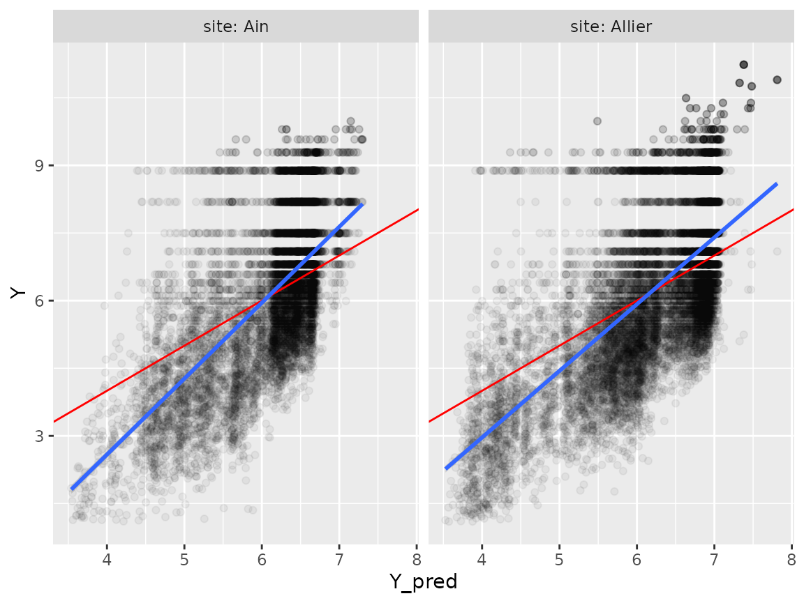

1._woody_model_logflux.Rmd
knitr::opts_chunk$set(warning=FALSE,message=FALSE)
library(woody)
library(tidyverse)
library(DiagrammeR)Prepare data describing the two stations:
tib_sites=tibble::tibble(site=c("Ain","Allier"),
q1.5=c(840,460),
station=c("V294201001 ","K340081001")) %>%
mutate(wpath=paste0("../data-raw/Wdata_",site),
qpath=paste0("../data-raw/qtvar/q",site,".csv"))
tib_sites## # A tibble: 2 × 5
## site q1.5 station wpath qpath
## <chr> <dbl> <chr> <chr> <chr>
## 1 Ain 840 "V294201001 " ../data-raw/Wdata_Ain ../data-raw/qtvar/qAin.csv
## 2 Allier 460 "K340081001" ../data-raw/Wdata_Allier ../data-raw/qtvar/qAllier…Wdata : wood occurrence data
First step: import wood data , indicating path to files and site name:
We will obtain as a result tib_W= tib_sites completed with Wdata.
result_file="../data-raw/results/tib_W.RDS"
if(!file.exists(result_file)){
tib_W=tib_sites %>%
group_by(vars=site,q1.5,station,wpath) %>%
mutate(Wdata=purrr::map2(.x=wpath,.y=site,
~import_Wdata(path=.x,site=.y,
min_length=1,
sample_length=TRUE
))) %>%
mutate(Wdata=purrr::map(.x=Wdata,
~mutate(.x,site=factor(site,levels=tib_sites$site))))
saveRDS(tib_W,result_file)
}
tib_W=readRDS(result_file)tib_W looks like this:
| site | q1.5 | station | wpath | qpath | vars | Wdata |
|---|---|---|---|---|---|---|
| Ain | 840 | V294201001 | ../data-raw/Wdata_Ain | ../data-raw/qtvar/qAin.csv | Ain | 10403 rows x 6 cols |
| Allier | 460 | K340081001 | ../data-raw/Wdata_Allier | ../data-raw/qtvar/qAllier.csv | Allier | 13806 rows x 6 cols |
and inside tib_W, the first lines of Wdata (for both sites) look like this (here for the Ain site):
| site | event | sitevent | Time | Length | Date |
|---|---|---|---|---|---|
| Ain | event_1 | Ain_event_1 | 2007-11-22 14:20:56 | 1.51 | 2007-11-22 |
| Ain | event_1 | Ain_event_1 | 2007-11-22 14:58:13 | 1.53 | 2007-11-22 |
| Ain | event_1 | Ain_event_1 | 2007-11-22 14:58:49 | 4.13 | 2007-11-22 |
| Ain | event_1 | Ain_event_1 | 2007-11-22 15:09:53 | 5.29 | 2007-11-22 |
| Ain | event_1 | Ain_event_1 | 2007-11-22 16:20:35 | 1.32 | 2007-11-22 |
| Ain | event_1 | Ain_event_1 | 2007-11-23 06:56:44 | 3.79 | 2007-11-23 |
Qdata: collect hydrological data & calculate all variables
Collect qtvar data from banquehydro, for the period covered by Wdata, and back in time so as to be able to calculate \(T_Q\):
result_file="../data-raw/results/tib_WQ.RDS"
if(!file.exists(result_file)){
tib_WQ=tib_W %>%
mutate(Qdata=purrr::map(.x=qpath,.y=site,
~import_Qdata(path=.x, site=.y)))
saveRDS(tib_WQ,result_file)
}
tib_WQ=readRDS(result_file)tib_WQ looks like this:
| site | q1.5 | station | wpath | qpath | vars | Wdata | Qdata |
|---|---|---|---|---|---|---|---|
| Ain | 840 | V294201001 | ../data-raw/Wdata_Ain | ../data-raw/qtvar/qAin.csv | Ain | 10403 rows x 6 cols | 86528 rows x 4 cols |
| Allier | 460 | K340081001 | ../data-raw/Wdata_Allier | ../data-raw/qtvar/qAllier.csv | Allier | 13806 rows x 6 cols | 82110 rows x 4 cols |
and inside tib_WQ, the first lines of Qdata (for both sites) look like this:
## # A tibble: 6 × 4
## station Time Q site
## <chr> <dttm> <dbl> <chr>
## 1 V2942010 2001-01-01 00:00:00 113 Ain
## 2 V2942010 2001-01-01 03:00:00 115 Ain
## 3 V2942010 2001-01-01 04:48:00 112 Ain
## 4 V2942010 2001-01-01 05:20:00 107 Ain
## 5 V2942010 2001-01-01 06:06:00 99.8 Ain
## 6 V2942010 2001-01-01 07:18:00 92 AinQdata completed with calculation of \(T_Q\) and \(S\)
result_file="../data-raw/results/tib_WQc.RDS"
if(!file.exists(result_file)){
tib_WQc=tib_WQ %>%
mutate(Qdata=purrr::map2(.x=Qdata,.y=q1.5,
~complete_Qdata(qtvar=.x, qnorm=.y)))
saveRDS(tib_WQc,result_file)
}
tib_WQc=readRDS(result_file)tib_WQc looks like tib_WQ, except now Qdata inside has been completed with new variables:
head(tib_WQc$Qdata[[1]])## # A tibble: 6 × 7
## site station Time Q T_Q S rT_Q
## <chr> <chr> <dttm> <dbl> <dbl> <dbl> <dbl>
## 1 Ain V2942010 2001-01-01 00:00:00 0.135 0 NA 0
## 2 Ain V2942010 2001-01-01 03:00:00 0.137 0.125 0.0000661 0.354
## 3 Ain V2942010 2001-01-01 04:48:00 0.133 0 -0.000165 0
## 4 Ain V2942010 2001-01-01 05:20:00 0.127 0 -0.000930 0
## 5 Ain V2942010 2001-01-01 06:06:00 0.119 0 -0.000932 0
## 6 Ain V2942010 2001-01-01 07:18:00 0.110 0 -0.000645 0Wdata completed with discharge data
result_file="../data-raw/results/tib_WcQc.RDS"
if(!file.exists(result_file)){
tib_WcQc=tib_WQc %>%
mutate(Wdata=purrr::map2(.x=Wdata,.y=Qdata,
~complete_Wdata_with_Qdata(Wdata=.x,Qdata=.y)))
saveRDS(tib_WcQc,result_file)
}
tib_WcQc=readRDS(result_file)Inside tib_WcQc, Wdata has been updated into:
## # A tibble: 6 × 10
## site event sitevent Time Length Date Q T_Q
## <fct> <chr> <chr> <dttm> <dbl> <date> <dbl> <dbl>
## 1 Ain event_1 Ain_event_1 2007-11-22 14:20:56 1.51 2007-11-22 0.221 4.97
## 2 Ain event_1 Ain_event_1 2007-11-22 14:58:13 1.53 2007-11-22 0.230 9.82
## 3 Ain event_1 Ain_event_1 2007-11-22 14:58:49 4.13 2007-11-22 0.230 9.82
## 4 Ain event_1 Ain_event_1 2007-11-22 15:09:53 5.29 2007-11-22 0.232 9.90
## 5 Ain event_1 Ain_event_1 2007-11-22 16:20:35 1.32 2007-11-22 0.242 9.99
## 6 Ain event_1 Ain_event_1 2007-11-23 06:56:44 3.79 2007-11-23 0.449 134.
## # … with 2 more variables: S <dbl>, rT_Q <dbl>We then calculate tib_Wwt, updating Wdata so that 1 row= 1 waiting time between two wood occurrences.
result_file="../data-raw/results/tib_WwtQc.RDS"
if(!file.exists(result_file)){
tib_WwtQc=tib_WcQc %>%
mutate(Wdata=purrr::map(.x=Wdata,~Wdata_as_waiting_times(.x)))
saveRDS(tib_WwtQc,result_file)
}
tib_WwtQc=readRDS(result_file)Inside tib_Wwt, Wdata now looks like this (for both sites):
## # A tibble: 6 × 15
## site event sitevent Time Length Date Q T_Q
## <fct> <chr> <chr> <dttm> <dbl> <date> <dbl> <dbl>
## 1 Ain event_1 Ain_event_1 2007-11-22 14:58:49 4.13 2007-11-22 0.230 9.82
## 2 Ain event_1 Ain_event_1 2007-11-22 15:09:53 5.29 2007-11-22 0.232 9.90
## 3 Ain event_1 Ain_event_1 2007-11-23 06:57:47 1.66 2007-11-23 0.450 134.
## 4 Ain event_1 Ain_event_1 2007-11-23 06:57:48 1.41 2007-11-23 0.450 134.
## 5 Ain event_1 Ain_event_1 2007-11-23 06:57:53 1.33 2007-11-23 0.450 134.
## 6 Ain event_1 Ain_event_1 2007-11-23 06:57:59 1.79 2007-11-23 0.450 134.
## # … with 7 more variables: S <dbl>, rT_Q <dbl>, TimeLagged <dttm>, W <dbl>,
## # npieces <int>, num <int>, Y <dbl>We run one random forest for both sites. Site is one of the predictors anyway.
tib_WpQc=tib_WwtQc %>%
mutate(Wdata=purrr::map(.x=Wdata,~predict_rf(newdata=.x,obj_rf=myrf)))
saveRDS(tib_WpQc,"../data-raw/results/tib_WpQc.RDS")Now let’s assess the model’s predictive performance
For both sites:
## # A tibble: 2 × 9
## # Groups: vars, q1.5, station, wpath [2]
## vars q1.5 station wpath site Wdata SCR SCT R2
## <chr> <dbl> <chr> <chr> <chr> <list> <dbl> <dbl> <dbl>
## 1 Ain 840 "V294201001 " ../data-raw/Wda… Ain <tibble> 19760. 31343. 0.370
## 2 Allier 460 "K340081001" ../data-raw/Wda… Alli… <tibble> 29112. 48109. 0.395
Wdata_pred=tib_WpQc %>%
select(Wdata) %>%
tidyr::unnest(Wdata, .name_repair="minimal") %>%
ungroup() %>%
mutate(Ycat=cut(Y,quantile(Y,seq(0,1,by=0.1),include.lowest=TRUE)))
p=ggplot(Wdata_pred,aes(x=Y_pred,y=Y))+
geom_point(alpha=0.05)+
geom_abline(intercept=0,slope=1, col="red")+
facet_grid(cols=vars(site),
labeller = labeller(.rows = label_both,
.cols = label_both))+
geom_smooth(method="lm")
plot(p)
Due to covariate shift, there is a tendency to overestimate low values of Y and underestimate high values of Y (trend in blue, theoretical Y=X line in red).
\[Y=\alpha*Y_{pred}+\beta\]
We will apply a simple linear correction of predictions to account for this in the predict_rf function (arguments)
lm_mod=lm(Y~Y_pred, data=Wdata_pred)
alpha=lm_mod$coefficients[[2]]
beta=lm_mod$coefficients[[1]]
saveRDS(c(alpha,beta),"../data-raw/correction_covariate_shift.RDS")So we correct \(Y_{pred}\) values accordingly
tib_WpQc=tib_WwtQc %>%
mutate(Wdata=purrr::map(.x=Wdata,
~predict_rf(newdata=.x,
obj_rf=myrf,
correction=c(alpha,beta))))
saveRDS(tib_WpQc,"../data-raw/results/tib_WpQc.RDS")## # A tibble: 2 × 9
## # Groups: vars, q1.5, station, wpath [2]
## vars q1.5 station wpath site Wdata SCR SCT R2
## <chr> <dbl> <chr> <chr> <chr> <list> <dbl> <dbl> <dbl>
## 1 Ain 840 "V294201001 " ../data-raw/Wda… Ain <tibble> 17575. 31343. 0.439
## 2 Allier 460 "K340081001" ../data-raw/Wda… Alli… <tibble> 26937. 48109. 0.440
Wdata_pred=tib_WpQc %>%
select(Wdata) %>%
tidyr::unnest(Wdata, .name_repair="minimal") %>%
ungroup() %>%
mutate(Ycat=cut(Y,quantile(Y,seq(0,1,by=0.1),include.lowest=TRUE)))
p=ggplot(Wdata_pred,aes(x=Y_pred,y=Y))+
geom_point(alpha=0.05)+
geom_abline(intercept=0,slope=1, col="red")+
facet_grid(cols=vars(site),
labeller = labeller(.rows = label_both,
.cols = label_both))+
geom_smooth(method="lm")
plot(p)